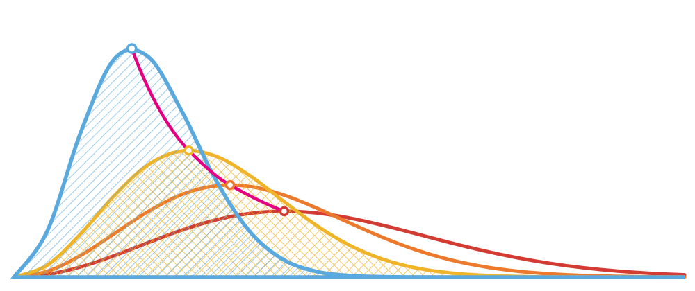

Pesquisa
As perguntas que orientam o trabalho do laboratório e os projetos em andamento.
Linhas de pesquisa
Os temas que estruturam o trabalho do grupo, do cálculo de estrutura eletrônica à simulação de sistemas aplicados.
Projetos
Projetos de pesquisa que grupo participa/colabora.
Como trabalhamos
Programas e infraestrutura usados no dia a dia do laboratório.